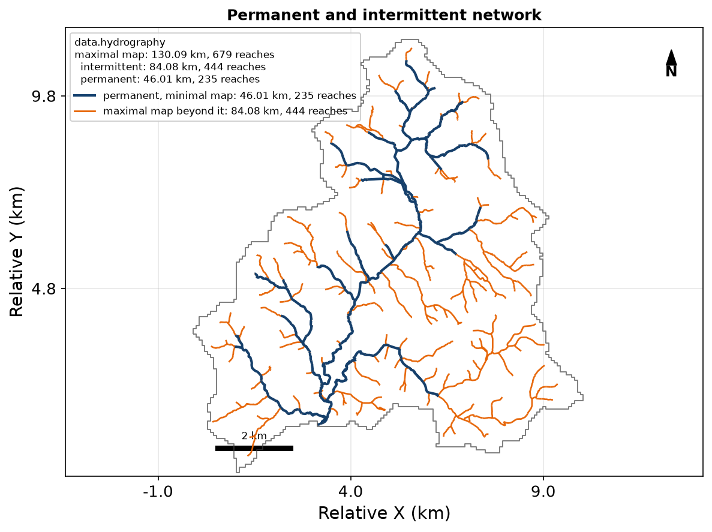
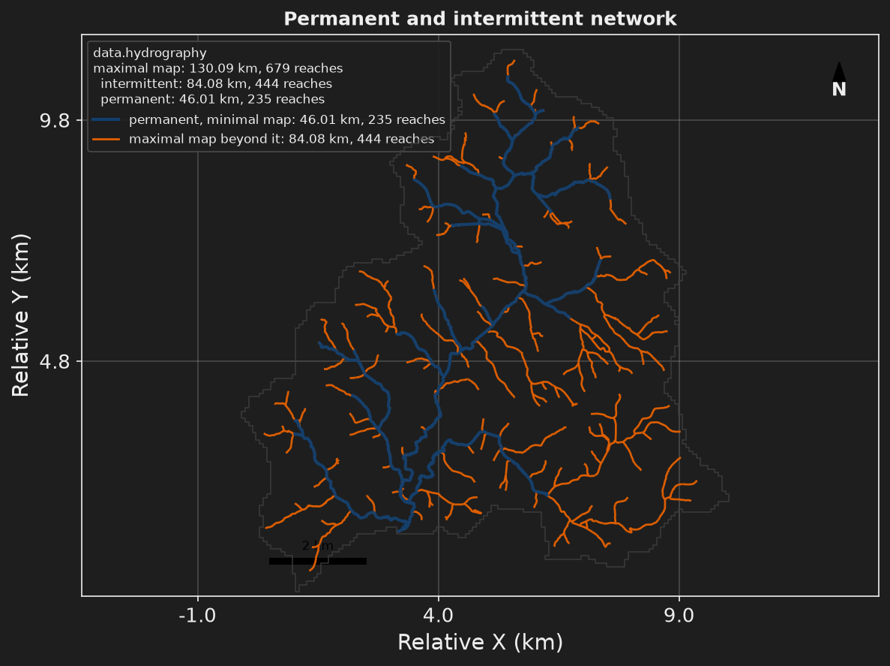

Step 3: the same data, from the APIs#
- Task
Fetch the river network and the gauge from the BD Topage and Hub’Eau APIs instead of local files.
- Time
About 40 s for the run once the data are cached. The first launch adds the downloads.
- Needs
Network access on the first run, no key. The example files (The staircase).
- Gives
Five figures and six files, with the permanent reaches of the network as a GeoPackage of their own.
Step 3 is step 2 with other sources. The network comes from BD Topage and the gauge from Hub’Eau, two French national APIs, instead of files on disk. Nothing else changes in the model. The answers are cached after the first launch, so a second run needs no network.




The file#
step3_api_data.toml inherits step2_local_data.toml · + new · ~ changed · keys link to their card1# Step 3: step 2 with the network and the gauge fetched from French national 2# APIs, BD Topage and Hub'Eau, instead of read off disk. Only the sources 3# change. Needs network access, no key. 4# 5# hmp run step3_api_data.toml 6 7+base_config = "step2_local_data.toml" 8 9[simulation] 10~name = "nancon_step3_api" 11 12# `sources__delete` drops step 2's list, so no local key leaks into the new one. 13[data.hydrography] 14+sources__delete = true 15 16# BD Topage: every reach with its permanence, the permanent ones kept apart. 17# The download box comes from the delineated watershed. 18[[data.hydrography.sources]] 19source = "bdtopage" 20 21# An API needs a period; the one step 4 simulates. 22[data.hydrometry] 23+sources__delete = true 24+date_start = "2000-01-01" 25+date_end = "2002-12-31" 26 27# Hub'Eau daily mean discharge of "Le Nançon à Lécousse - Pont aux Anes". 28[[data.hydrometry.sources]] 29source = "hubeau" 30product = "QmnJ" 31station_ids = ["J001401001"] 32 33# The BD Topage network, all reaches then the permanent class, then the 34# simulated seepage against all reaches. 35[display] 36~figures = [ 37 "watershed_id_card", 38 "hydrographic_network_reference", 39 "hydrographic_network_permanence", 40 "seepage_network_confusion_map", 41 "downslope_distance_map", 42] 43 44# Step 2's exports, where the network is now all BD Topage reaches, plus the 45# permanent reaches as a GeoPackage of their own. 46+[[export__append]] 47+variables = "hydrographic_network_reference_permanent"
The resolved file of step 3 against the resolved file of step 2.
--- step2_local_data
+++ step3_api_data
@@ -7,3 +7,3 @@
[simulation]
-name = "nancon_step2_local"
+name = "nancon_step3_api"
@@ -62,2 +62,3 @@
"hydrographic_network_reference",
+ "hydrographic_network_permanence",
"seepage_network_confusion_map",
@@ -85,2 +86,5 @@
+[[export]]
+variables = "hydrographic_network_reference_permanent"
+
[data]
@@ -93,10 +97,14 @@
sources = [
- { source = "custom", path = "nancon_stream_network.gpkg" },
+ { source = "bdtopage" },
]
+[data.hydrometry]
+date_start = "2000-01-01"
+date_end = "2002-12-31"
+
[[data.hydrometry.sources]]
-source = "custom"
-path = "hydrometry"
+source = "hubeau"
+product = "QmnJ"
station_ids = [
- "NANCON",
+ "J001401001",
]
Run it#
hmp run step3_api_data.toml
import hydromodpy as hmp
run = hmp.run("step3_api_data.toml")
The first launch downloads from BD Topage and Hub’Eau. The later ones read the cache.
sources__delete = true empties the inherited list of sources before the new one is
written, so no local key leaks into it. An API also needs a period, which the file gives:
the three years that step 4 simulates.
What you get#
Figure |
What it shows |
|---|---|
|
As in step 1 |
|
Every BD Topage reach |
|
Two maps of the network: all the mapped reaches, and only those that flow all year |
|
As in step 2, against every reach of BD Topage |
|
As in step 2 |
The exports are step 2’s four, plus the permanent reaches as a GeoPackage of their own:
six files in share/nancon_step3_api/.
Key fields#
What can go wrong#
Symptom |
Cause |
Fix |
|---|---|---|
|
The first launch has to reach BD Topage and the machine has no route to it, or the service is down. The run stops: a source the file declares is never skipped. |
Run again when the network is back. Behind a proxy, set |
The exit codes are listed on Exit codes.
Next: Step 4: the transient run. It repeats the local data of Step 2: the mapped network and the gauge.